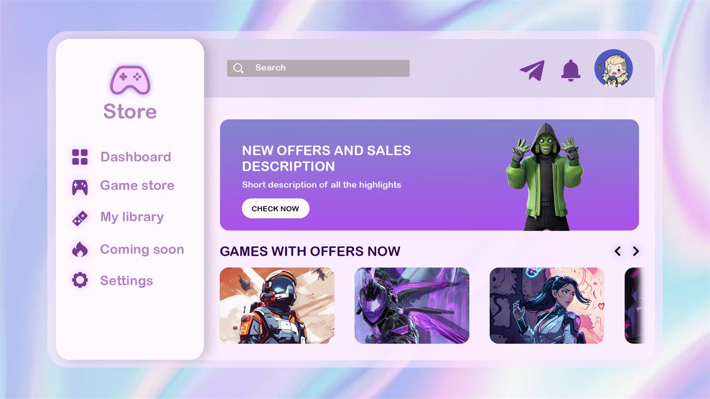
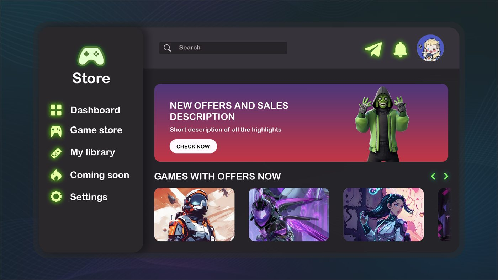
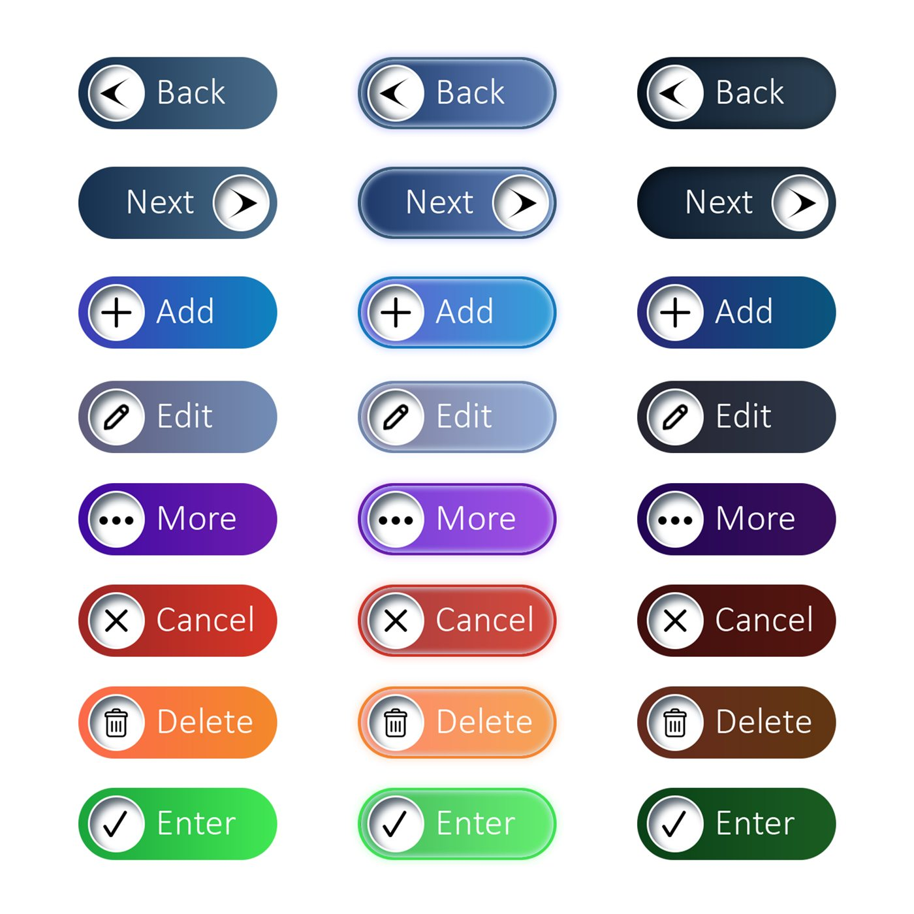

Game Store UI
A storefront landing page, built twice — once light and once dark. Two themes rather than one because a store is where a colour system is tested hardest: every product image on the page is fighting the background for attention.
Landing page
Storefront
The landing page carries featured titles, a browsing grid and the promotional slots that pay for the page. Building both themes from the same layout forced the contrast decisions to be made in the system rather than per element, which is the only way the dark version avoids becoming a separate design.
-

Light theme
-

Dark theme
Button variants
Designed as potential future button variants for the store UI — eight actions, each drawn in three states so the set could be dropped in without redrawing the interaction: default, hover, and pressed.
-

Eight actions × three states